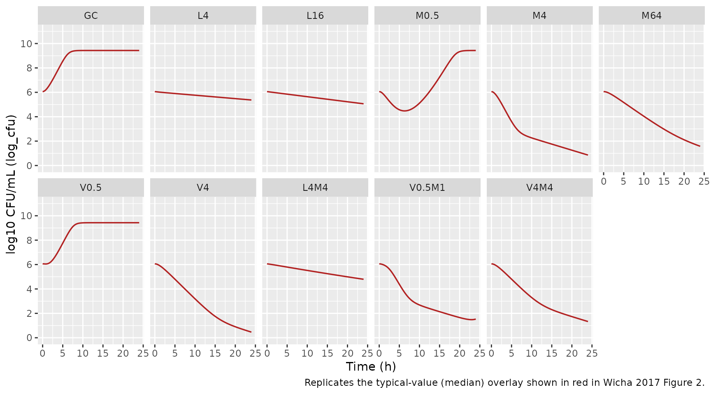
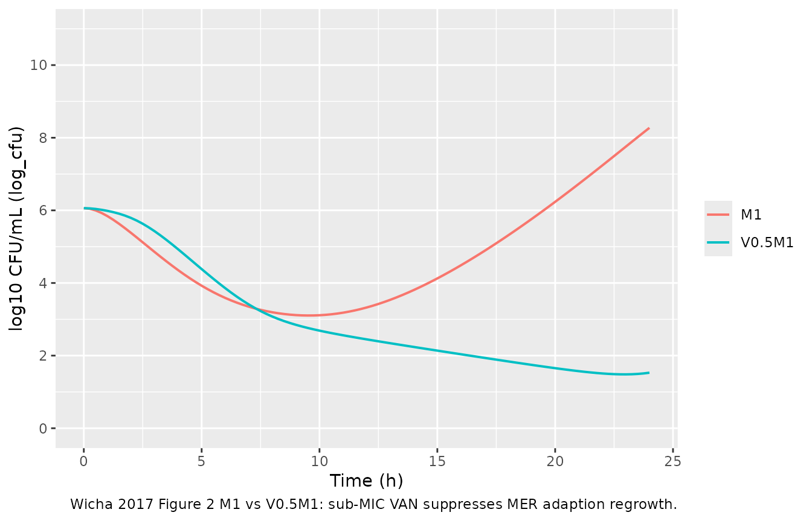

Linezolid + meropenem + vancomycin time-kill (Wicha 2017)
Source:vignettes/articles/Wicha_2017_linezolid_meropenem_vancomycin.Rmd
Wicha_2017_linezolid_meropenem_vancomycin.RmdModel and source
- Citation: Wicha SG, Huisinga W, Kloft C. Translational pharmacometric evaluation of typical antibiotic broad-spectrum combination therapies against Staphylococcus aureus exploiting in vitro information. CPT Pharmacometrics Syst Pharmacol. 2017;6(8):512-522. doi:10.1002/psp4.12197.
- Description: In vitro (MSSA ATCC 29213). Semimechanistic time-kill pharmacodynamic model of linezolid, meropenem, and vancomycin against methicillin-susceptible Staphylococcus aureus. Bacterial life cycle has three states: growing (gro), replicating (repl), and persisting (pers). LZD inhibits the GRO->REP transition (bacteriostatic via krep) and induces a replication-independent killing rate kdeath_lzd on growing bacteria. MER and VAN, as cell wall-active antibiotics, impair successful doubling at the REP->GRO transition; the joint MER+VAN action is encoded as a modified Bliss-independence term that includes the paradoxical Eagle-effect self-inhibition of MER at high concentrations and the VAN Emax cap. Drug-unsusceptible persisters are generated during replication at rates kper_mer * E_MER and kper_van * E_VAN, then die at kdeath_per. An adaptive-resistance submodel (Tam 2005) inflates the effective EC50 of MER and of VAN over time via fractional ARon states; subinhibitory VAN concentrations inhibit the MER-adaption rate (monodirectional VAN-on-MER PD interaction). MER and VAN solution concentrations decay first-order due to chemical degradation in growth medium (rates fixed from HPLC measurement); LZD is stable. The model is in-vitro PD only – there is no human PK component; drug exposures are static dosing at t = 0. Random effects (eta) are NOT present: the paper reports replicate-only experimental variability and uses an additive residual error on log10(CFU/mL).
- Article: https://doi.org/10.1002/psp4.12197
Population
The packaged model was fit to a 24-hour in-vitro time-kill experiment using methicillin-susceptible Staphylococcus aureus (MSSA) reference strain ATCC 29213. The strain was exposed to static, replicate-controlled concentrations of linezolid (LZD, 0.5 to 32 mg/L), meropenem (MER, 0.015 to 8 mg/L), and vancomycin (VAN, 0.06 to 16 mg/L) alone and in selected dual combinations of LZD with MER and VAN with MER. n = 1,617 timed CFU/mL data points were available for model building. MIC values for the reference strain were LZD = 2.0 mg/L, MER = 0.125 mg/L, VAN = 1.0 mg/L (Wicha 2017 Methods, page 2-3). The model was externally evaluated against two clinical MSSA isolates (MV13391, MV13488) and against published time-kill datasets for LZD + VAN against methicillin-resistant S. aureus, penicillin + erythromycin against S. pneumoniae, and ampicillin + chloramphenicol against group B streptococci.
There is no human or animal cohort: this is an in-vitro model with no
subject-level covariates. Replicate-to-replicate variability was small
and the published model carries no IIV / inter-experiment etas; the
residual is an additive standard deviation on log10 CFU/mL (Wicha 2017
Table 1 footnote). The complete population metadata is available
programmatically via
readModelDb("Wicha_2017_linezolid_meropenem_vancomycin")$population.
Source trace
The semimechanistic PD model couples three bacterial states (growing
gro, replicating repl, persisting
pers), three drug solution states (lzd,
mer, van) with first-order chemical
degradation for MER and VAN, and four adaption-resistance fractional
states (aroff_mer, aron_mer,
aroff_van, aron_van). The published governing
equations are Wicha 2017 Eqs. 5-14 (page 4-5). Eq. 8 (the GRO ODE) is
the load-bearing combination form:
d/dt(GRO) = - kdeath,LZD * E_LZD * GRO
- krep(t, CFU) * (1 - E_LZD) * GRO
+ kdoub * [1 - E_MER * (1 - Emax_MER,Eagle * E_MER,Eagle) * (1 - E_VAN)]
* (1 - Emax_VAN * E_VAN) * REP * 2The nested (1 - E_VAN) gate inside the inner bracket is
what implements the paper’s observation that the joint MER-plus-VAN
maximum effect is limited to the VAN-alone effect (M4 vs V4M4 in Figure
2): at high VAN, that gate goes to zero, the MER contribution cancels,
and the doubling success-fraction collapses to the VAN-only
(1 - Emax_VAN * E_VAN) factor. The Eagle-effect
self-inhibition of MER at high MER concentrations (67.2% remaining
inhibition above ~0.5 mg/L) is encoded by the
(1 - Emax_MER,Eagle * E_MER,Eagle) correction inside the
same bracket.
The full per-parameter source trace is recorded as in-file comments
next to each ini() entry in
inst/modeldb/pharmacodynamics/Wicha_2017_linezolid_meropenem_vancomycin.R.
The table below collects them in one place. All values come from Wicha
2017 Table 1.
| Parameter (paper symbol) | File name | Value | Units | Source |
|---|---|---|---|---|
| CFU0 | cfu0 |
6.06 | log10 CFU/mL | Table 1 |
| CFUmax | cfumax |
9.43 | log10 CFU/mL | Table 1 |
| klag | lklag |
0.88 | 1/h | Table 1 |
| krep | lkrep |
1.56 | 1/h | Table 1 |
| kdoub (FIXED) | lkdoub |
100 | 1/h | Table 1 |
| kdeath,per | lkdeath_per |
0.23 | 1/h | Table 1 |
| EC50,LZD | lec50_lzd |
0.68 | mg/L | Table 1 |
| H,LZD | lhill_lzd |
1.55 | (unitless) | Table 1 |
| kdeath,LZD | lkdeath_lzd |
0.10 | 1/h | Table 1 |
| EC50,MER,t=0 | lec50_mer_t0 |
0.022 | mg/L | Table 1 |
| H,MER | lhill_mer |
3.23 | (unitless) | Table 1 |
| Emax,MER,Eagle | emax_mer_eagle |
0.328 | fraction | Table 1 (32.8%) |
| EC50,MER,Eagle | lec50_mer_eagle |
1.35 | mg/L | Table 1 |
| H,MER,Eagle (FIXED) | lhill_mer_eagle |
4 | (unitless) | Table 1 |
| beta,MER | lb_mer |
9.53 | (unitless) | Table 1 |
| s,MER (tau,MER) | ls_mer |
0.47 | L/(mg*h) | Table 1 |
| kper,MER | lkper_mer |
0.11 | 1/h | Table 1 |
| kdeg,MER (FIXED) | lkdeg_mer |
0.019 | 1/h | Table 1 |
| Emax,VAN | emax_van |
0.743 | fraction | Table 1 (74.3%) |
| EC50,VAN,t=0 | lec50_van_t0 |
0.46 | mg/L | Table 1 |
| H,VAN (FIXED) | lhill_van |
20 | (unitless) | Table 1 |
| EC50,VAN,ARI | lec50_van_ari |
0.39 | mg/L | Table 1 |
| H,VAN,ARI (FIXED) | lhill_van_ari |
1.0 | (unitless) | Table 1 |
| beta,VAN | lb_van |
3.59 | (unitless) | Table 1 |
| s,VAN (tau,VAN) | ls_van |
0.034 | L/(mg*h) | Table 1 |
| kper,VAN | lkper_van |
0.017 | 1/h | Table 1 |
| kdeg,VAN (FIXED) | lkdeg_van |
0.0039 | 1/h | Table 1 (3.9e-3) |
| Residual SD | addSd |
0.63 | log10 CFU/mL | Table 1 (sigma) |
Compartment and observation conventions (see the Assumptions and deviations section for justification of the non-canonical names):
| Compartment | Units | Meaning |
|---|---|---|
gro |
CFU/mL | growing-state bacteria |
repl |
CFU/mL | replicating-state bacteria |
pers |
CFU/mL | drug-unsusceptible persister bacteria |
lzd |
mg/L | linezolid bath concentration (chemically stable) |
mer |
mg/L | meropenem bath concentration (first-order decay) |
van |
mg/L | vancomycin bath concentration (first-order decay) |
aroff_mer, aron_mer
|
fraction | MER adaption-resistance flip-flop (Eq. 5-6 analog) |
aroff_van, aron_van
|
fraction | VAN adaption-resistance flip-flop (Eq. 12-13) |
Cc |
log10 CFU/mL | observation: log10 of total bacterial concentration |
Helper: build a time-kill scenario
The published experiment used static drug concentrations applied at t
= 0. The helper below builds an et() event table for an
arbitrary combination of LZD, MER, and VAN starting concentrations. Drug
doses are inserted as bolus events into the drug compartments with
amt interpreted as the initial bath concentration in
mg/L.
mod <- readModelDb("Wicha_2017_linezolid_meropenem_vancomycin")
# MIC for ATCC 29213 (paper page 2)
MIC <- c(LZD = 2.0, MER = 0.125, VAN = 1.0)
build_scenario <- function(label, clzd = 0, cmer = 0, cvan = 0,
times = seq(0, 24, by = 0.25)) {
ev <- et(amt = 0, cmt = "lzd", time = 0) # anchor event-table at t = 0
if (clzd > 0) ev <- et(ev, amt = clzd, cmt = "lzd", time = 0)
if (cmer > 0) ev <- et(ev, amt = cmer, cmt = "mer", time = 0)
if (cvan > 0) ev <- et(ev, amt = cvan, cmt = "van", time = 0)
ev <- et(ev, times)
out <- as.data.frame(rxode2::rxSolve(mod, ev))
out$scenario <- label
out$clzd <- clzd; out$cmer <- cmer; out$cvan <- cvan
out
}Replicate Figure 2 panels (typical-value)
Wicha 2017 Figure 2 shows 49 time-kill panels covering the growth
control (GC), single-drug, and dual-combination scenarios. We reproduce
a representative subset that exercises every published mechanism: growth
control (carrying capacity + lag), single LZD (replication-independent
kill via kdeath_lzd plus growth arrest), single MER
(replication- dependent kill with Eagle effect at high concentrations),
single VAN (Emax cap at 74.3% and steep H = 20), the MER-LZD antagonism,
and the VAN-MER combination “limited to VAN”.
panels <- bind_rows(
build_scenario("GC"),
build_scenario("L4", clzd = 4 * MIC[["LZD"]]),
build_scenario("L16", clzd = 16 * MIC[["LZD"]]),
build_scenario("M0.5", cmer = 0.5 * MIC[["MER"]]),
build_scenario("M4", cmer = 4 * MIC[["MER"]]),
build_scenario("M64", cmer = 64 * MIC[["MER"]]),
build_scenario("V0.5", cvan = 0.5 * MIC[["VAN"]]),
build_scenario("V4", cvan = 4 * MIC[["VAN"]]),
build_scenario("L4M4", clzd = 4 * MIC[["LZD"]], cmer = 4 * MIC[["MER"]]),
build_scenario("V0.5M1", cvan = 0.5 * MIC[["VAN"]], cmer = 1 * MIC[["MER"]]),
build_scenario("V4M4", cvan = 4 * MIC[["VAN"]], cmer = 4 * MIC[["MER"]])
)
panels <- panels |>
mutate(scenario = factor(scenario,
levels = c("GC", "L4", "L16", "M0.5", "M4", "M64",
"V0.5", "V4", "L4M4", "V0.5M1", "V4M4")))
ggplot(panels, aes(time, Cc)) +
geom_line(color = "firebrick", linewidth = 0.6) +
facet_wrap(~ scenario, ncol = 6) +
scale_y_continuous(limits = c(0, 11), breaks = seq(0, 10, 2)) +
labs(x = "Time (h)", y = "log10 CFU/mL (Cc)",
caption = "Replicates the typical-value (median) overlay shown in red in Wicha 2017 Figure 2.")
Key qualitative checks
Growth control (GC). With no drug, total CFU/mL must
climb from 10^cfu0 through the lag and approach
CFUmax = 10^9.43.
gc <- panels |> filter(scenario == "GC") |> select(time, Cc)
sprintf("GC at 0 h: log10 CFU/mL = %.2f", gc$Cc[gc$time == 0])
#> [1] "GC at 0 h: log10 CFU/mL = 6.06"
sprintf("GC at 24 h: log10 CFU/mL = %.2f (paper CFUmax = 9.43)",
gc$Cc[gc$time == 24])
#> [1] "GC at 24 h: log10 CFU/mL = 9.43 (paper CFUmax = 9.43)"Drug chemical degradation. Wicha 2017 reports MER and VAN decay to 62.9% and 90.6% of their initial concentration at t = 24 h (page 5).
mer_decay <- build_scenario("M_high", cmer = 8) |>
filter(time %in% c(0, 24))
van_decay <- build_scenario("V_high", cvan = 16) |>
filter(time %in% c(0, 24))
sprintf("MER at 24 h / MER at 0 h = %.3f (paper: 0.629)",
mer_decay$mer[mer_decay$time == 24] /
mer_decay$mer[mer_decay$time == 0])
#> [1] "MER at 24 h / MER at 0 h = 0.634 (paper: 0.629)"
sprintf("VAN at 24 h / VAN at 0 h = %.3f (paper: 0.906)",
van_decay$van[van_decay$time == 24] /
van_decay$van[van_decay$time == 0])
#> [1] "VAN at 24 h / VAN at 0 h = 0.911 (paper: 0.906)"MER Eagle effect at high MER. Wicha 2017 states that
MER at high concentrations attains only 67.2% inhibition of doubling
(1 - Emax_Eagle = 0.672) rather than 100% at optimal
concentrations (page 4). M4 (4 x MIC = 0.5 mg/L) is near the Eagle
transition; M64 (64 x MIC = 8 mg/L) is well into the Eagle regime. The
24 h endpoints should reflect the weaker kill at M64 relative to M4.
panels |>
filter(scenario %in% c("M0.5", "M4", "M64"), time == 24) |>
select(scenario, Cc)
#> scenario Cc
#> 1 M0.5 9.4296716
#> 2 M4 0.8571723
#> 3 M64 1.5790694Antagonism between LZD and MER. Wicha 2017 explains that when LZD growth-arrests bacteria, they no longer enter replication and so are protected from MER’s replication-dependent kill (page 4-5). L4M4 should therefore look like L4 (LZD bacteriostasis with marginal kill) rather than like M4 (rapid bactericidal kill).
panels |>
filter(scenario %in% c("L4", "M4", "L4M4"), time == 24) |>
select(scenario, Cc)
#> scenario Cc
#> 1 L4 5.3723389
#> 2 M4 0.8571723
#> 3 L4M4 4.7932809Joint MER + VAN limited to VAN at high VAN. Wicha
2017 reports that “the maximum joint effect of MER and VAN was limited
to the effect of VAN” (page 4), citing M4 vs V4M4 in Figure 2. At V4M4
both drug levels are above MIC, so the inner (1 - E_VAN)
gate in Eq. 8 is near zero and the success-fraction collapses to the
VAN-only factor.
panels |>
filter(scenario %in% c("M4", "V4", "V4M4"), time == 24) |>
select(scenario, Cc)
#> scenario Cc
#> 1 M4 0.8571723
#> 2 V4 0.4626403
#> 3 V4M4 1.3295384VAN-on-MER adaptive-resistance suppression. Wicha 2017 reports a monodirectional PD interaction where sub-MIC VAN delays MSSA adaption to MER (page 5). M1 alone shows MER regrowth after initial killing; V0.5M1 should not.
ari <- bind_rows(
build_scenario("M1", cmer = 1 * MIC[["MER"]]),
build_scenario("V0.5M1", cvan = 0.5 * MIC[["VAN"]], cmer = 1 * MIC[["MER"]]))
ggplot(ari, aes(time, Cc, color = scenario)) +
geom_line(linewidth = 0.7) +
scale_y_continuous(limits = c(0, 11), breaks = seq(0, 10, 2)) +
labs(x = "Time (h)", y = "log10 CFU/mL (Cc)", color = NULL,
caption = "Wicha 2017 Figure 2 M1 vs V0.5M1: sub-MIC VAN suppresses MER adaption regrowth.")
Assumptions and deviations
-
Non-canonical compartment names (
gro,repl,pers,lzd,mer,van,aroff_mer,aron_mer,aroff_van,aron_van). The nlmixr2lib canonical compartment register (R/conventions.R::canonicalCompartments) targets popPK / PK-PD models for systemic drug disposition; the bacterial-life-cycle and adaption-resistance states here have no analog in that register. The names are retained from Wicha 2017 (Figure 1, page 3) to keep the source trace direct.checkModelConventions()emits compartment-name warnings; they are expected and documented here. -
Single observation
Cccarries log10 CFU/mL, not a drug concentration. nlmixr2lib’s single-output convention names the observationCc; the underlying quantity here is log10 of total bacterial CFU/mL. Theunits$concentrationmetadata makes this explicit (“log10 CFU/mL (observation)”). The conventions linter warns thatunits$dosing(mg/L) and the observation numerator (log10 CFU) appear dimensionally incompatible – this is intentional: dosing is an in-vitro bath concentration in mg/L, observation is a bacterial count. -
Drug-state dosing semantics. The
lzd,mer, andvancompartments are initialised by bolus dosing events attime = 0whoseamtfield is interpreted as the initial bath concentration in mg/L. The compartment state subsequently evolves only via the first-order degradation ODEs (zero for LZD;kdeg_mer * merfor MER;kdeg_van * vanfor VAN), so the compartments hold concentration, not mass. -
Bacterial counts on linear scale internally. Table
1 reports CFU0 and CFUmax in log10 units; the ODEs operate on linear
CFU/mL. The model converts in
model(): initial conditiongro(0) <- 10^cfu0and capacity term1 - cfu_total / 10^cfumax. A1e-6floor is added inside thelog10(...)observation to avoidlog10(0)when all bacterial states are driven to zero by combined regimens. - No IIV / random effects. Wicha 2017 explicitly states that between-replicate variability was small and no random effects were required (page 4). The only stochastic component in the published model is the additive residual on log10 CFU/mL (sigma = 0.63). The 90% prediction intervals in Wicha 2017 Figure 2 came from sampling the parameter variance-covariance matrix (a parametric uncertainty band), not from IIV; the full covariance matrix is not published, so this vignette plots typical-value trajectories rather than reproducing the Figure 2 uncertainty bands directly.
-
Modified Bliss-Independence parsing. The trimmed
text extracted from the PDF rendered Eq. 8 with several
“formula-not-decoded” placeholders. The literal PDF rendering of Eq. 8
has the success- fraction
[1 - E_MER * (1 - Emax_MER,Eagle * E_MER,Eagle) * (1 - E_VAN)] * (1 - Emax_VAN * E_VAN), where the inner(1 - E_VAN)gates the MER contribution and the outer(1 - Emax_VAN * E_VAN)enforces the 74.3% Emax cap on VAN’s effect. This is the form encoded inmodel(). It reproduces (a) MER alone reaches 100% inhibition at optimal concentrations and 67.2% in the Eagle range, (b) VAN alone reaches at most 74.3% inhibition, and (c) high VAN + high MER reduces to VAN-alone behaviour, matching the paper’s “limited to VAN” claim (M4 vs V4M4 in Figure 2). -
Out-of-scope: human PK linkage and clinical-trial
simulation. Wicha 2017 also performs a clinical-trial
simulation by linking the semimechanistic PD model to upstream published
popPK models for LZD (Sasaki 2011), MER (Li 2006), and VAN
(Llopis-Salvia 2006). Those PK models are separate publications that are
not part of this extraction. Users wishing to reproduce the Figure 5
clinical-trial simulation would build the upstream popPK models
separately, route their unbound-plasma concentration outputs into the
lzd/mer/vancompartments as time-varying inputs, and disable the in-vitro degradation ODEs (kdeg_merandkdeg_van) since those are bath-medium artefacts not present in plasma. -
External-validation scenarios not packaged. The
cross-strain (MV13391, MV13488) and cross-combination (penicillin +
erythromycin, ampicillin + chloramphenicol) evaluations described in the
paper require re-estimating
cfu0,cfumax, andkrepfrom the external time-kill control curves and settingEC50of the external drugs to their respective MICs (page 3). These are extension use-cases of the same model and are not pre-packaged as separatereadModelDb()entries.